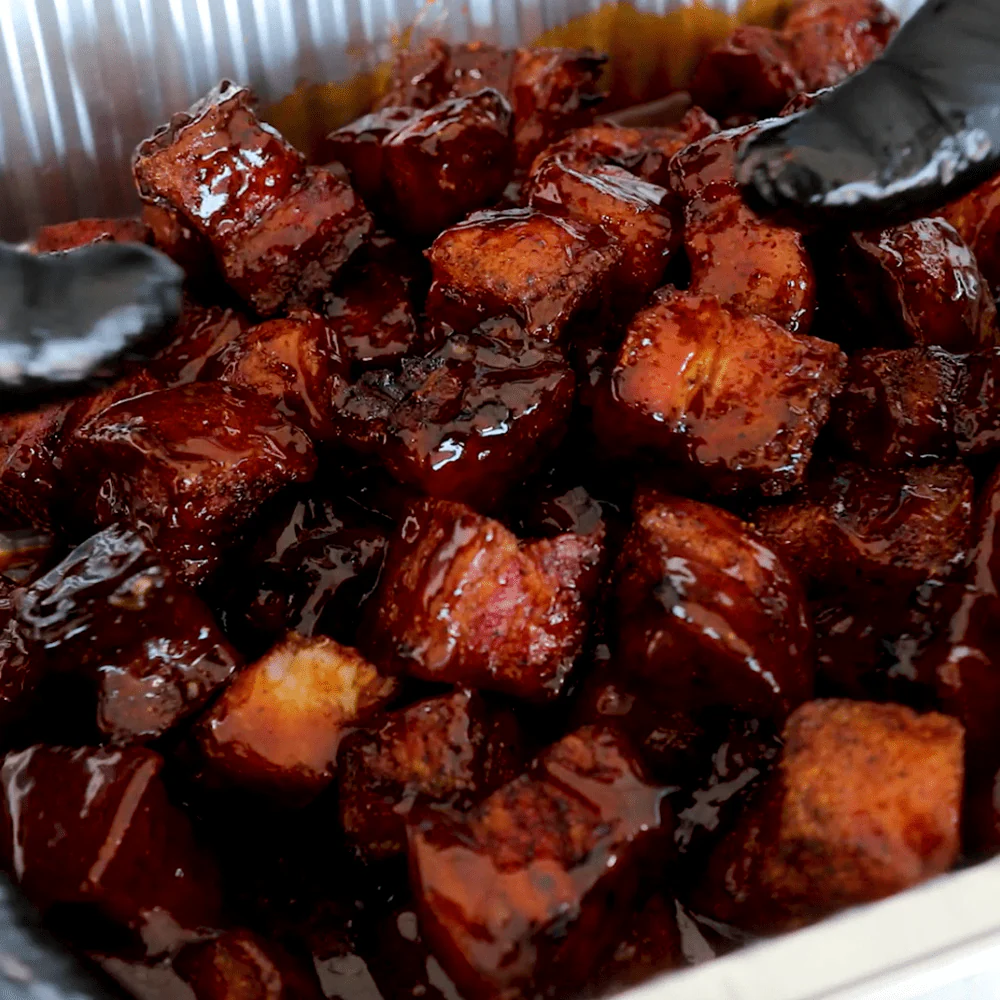

Smoked Pork Belly

When ever there is a family gathering I am asked to make my smoked pork belly. It's nothing fancy
but it sure gets everyone talking and wanting more!
Ingredients
- 1 slab of pork belly
- 1 12 oz honey mustard (generic brand is fine)
- 1 container of your favorite seasons
- 1 18 oz container of your favorite bbq sauce (I use Sweet Baby Ray's)
- 1 12 oz bag of brown sugar
- 1 12 oz Frank's Red Hot sauce
- Your favorite wood/pellets
Steps
- Pre-heat your smoker to 225 degrees F.
- Unpackage your pork belly and pat dry.
- Coat all sides of the pork belly with the honey mustard. This makes the dry seasoning stick to the meat.
- Evenly coat all sides of the pork belly with your seasoning. I use the green label Traeger seasoning.
- Add your favorite wood/pellets. I like to use apple with a little mesquite, or cherry.
- Place your pork belly on the top shelf with the fat side pointed down. You're going to
leave the pork belly smoking for 3 hours.
- After 3 hours, remove the pork belly.
- Add the bbq sauce, brown sugar, and Frank's Red Hot sauce over the pork belly. No need
mix the ingrediants, they will melt and mix in the heat.
- Cover and seal the pork belly and replace into the smoker for 2 hours.
- Remove the cover and place the pork belly back into the smoker for up to 1 more hour.
- Remove the container and cut the pork belly into cubes, roughly 2 inches, and serve!